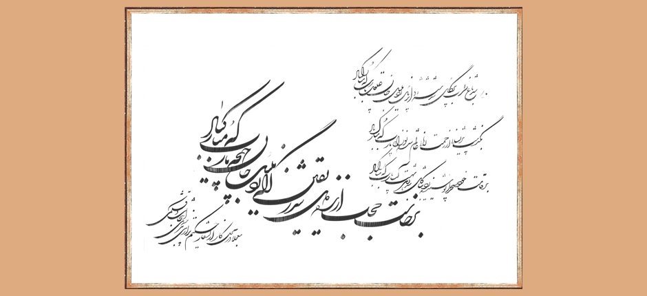

Music & Melodies of the Persian Ismaili Qasideh
Introduction | Modes | Melodies | Musical Instruments | Qasideh Tradition | Qasideh Collection
Qasideh | Dila mushtaq-i didaram

Original calligraphy by Ustad Esmaili Mood from Iran.Listen to Dila mushtaq-i didaram:
| Translation | Transliteration | Lyrics |
|---|---|---|
| O friend! I am craving for a meeting with the beloved; I am lonely, I am in love and I am intoxicated; now, I desire this encounter and now I have set out on this journey. | Dilā mushtāq-i dīdāram, gharīb-u ʿāshiq-u mastam Kunūn ʿazm-i liqā dāram, man īnak rakht bar bastam | دلا مشتاق دیدارم غریب و عاشق و مستم کنون عزم لقا دارم من اینک رخت بربستم |
| You are the qibla of the entire universe; I will not turn away from you. I will prostrate towards this qibla anywhere I am. | Tuʾī qiblay-i hamah ʿālam, zi qibla rū nagardānam Bidīn qibla namāz āram bi har wādī ki man hastam | تویی قبله همه عالم، ز قبله رو نگردانم بدین قبله نماز آرم به هر وادی که من هستم |
| I have only one soul in this body. How can I have faith in any but you? I have just stepped out of nonexistence for the sake of your love. | Marā jānī darīn qālib wa āngah juz tuʾam madhhab Ki man az nīstī jāna bi ʿishq-i tu burūn jastam | مرا جانی در این قالب وانگه جز توم مذهب که من از نیستی جانا به عشق تو برون جستم |
| If I desire anyone but you, I deserve to be hanged from the gallows. If I resort to anyone but you, may my hands be cut off. | Agar juz tu sarī dāram, sizāwar-i sar-i dāram Wagar juz dāmanat gīram, burīdah bād īn dastam | اگر جز تو سری دارم سزاوار سرِ دارم وگر جز دامنت گیرم بریده باد این دستم |
| Wherever I go, I am like a single letter which has no meaning on its own, so I opened my eyes like the letter hā and I sat in the middle of the word ʿishq like the letter shīn. | Bi har jā ki rawam bī tu yakī harfīm bī maʿnī Chu hay dū chashm bugshādam, chu shīn dar ʿishq binshastam | به هر جا که روم بی تو یکی حرفیم بیمعنی چو هی دو چشم بگشادم چو شین در عشق بنشستم |
| So, when I am the letters hā and shīn, why have I lost the word hush? Because the word hush requires a combination and I have let go of all combinations! | Chu man hay-am chu man shīnam chirā gum kardah-am hush rā Ki hush tarkīb mīkhāhad, man az tarkīb bugsastam | چو من هیام چو من شینم چرا گم کردهام هُش را که هش ترکیب می خواهد من از ترکیب بگسستم |
| The entire universe has gone astray and become infidel because of the temptations of their whims; it was the blessed consequence of this love that I got rid of my lower self. | Jahānī gumrah-u murtad zi waswās-i hawāy-i khud Bi iqbāl-i chunīn ʿishqī zi sharr-i khīshtan rastam | جهانی گمره و مرتد ز وسواس هوای خود به اقبال چنین عشقی ز شر خویشتن رستم |
| This heart of my mine rose to the topmost hill of love upon becoming purified; it was due to the impurity of water and soil that this passionate heart of mine had remained in the valleys of nature. | Bi sarbālā-yi ʿishq īn dil az ān āmad ki ṣāfī shud Ki az durdiyy-i āb-u gil, man-i bīdil darīn pastam | به سربالای عشق این دل از آن آمد که صافی شد که از دردی آب و گل من بیدل در این پستم |
| The image of you was so fine that whenever I kissed your feet, my lips, though tender, injured them! | Zahī luṭf-i khīyāl-i ū ki chun dar pāsh uftādam Qadamhā-yi khīyālash rā bi āsīb-i du lab khastam | زهی لطف خیال او که چون در پاش افتادم قدمهای خیالش را به آسیب دو لب خستم |
| I gave up talking and I dissociated from speech, but when incidents came one after the other, I repented from my repentance. | Bishustam dast az guftan, ṭahārat kardam az manṭiq Ḥawādith chun payāpay shud, wuḍūy-i tawba bishkastam | بشستم دست از گفتن طهارت کردم از منطق حوادث چون پیاپی شد وضوی توبه بشکستم |
 Download the mp3 of the Qasideh
Download the mp3 of the Qasideh
Last updated: 10/07/2014 15:46